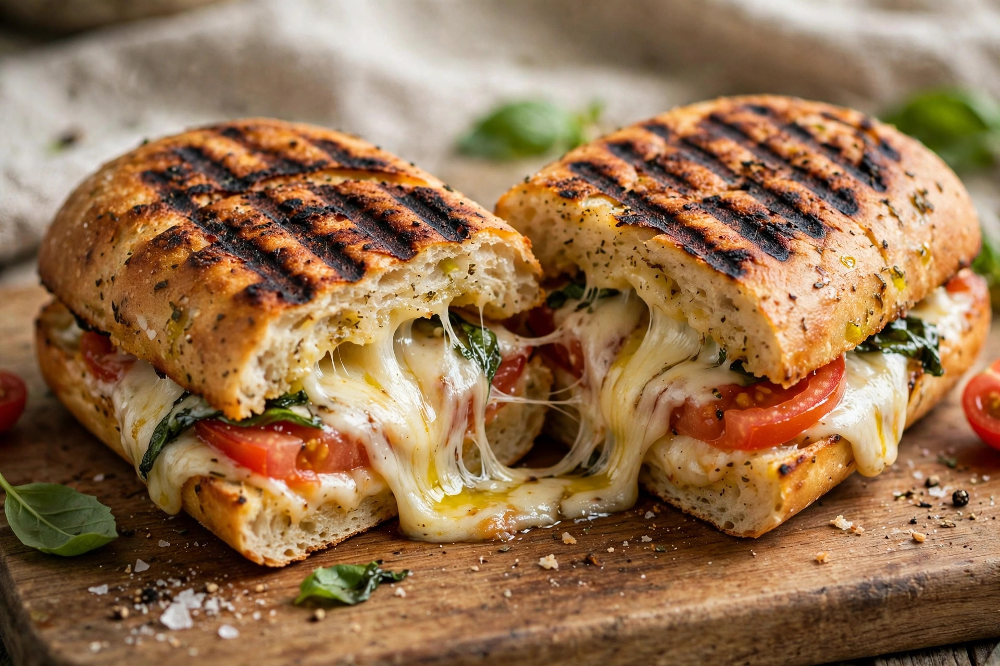

From Wikipedia, the free encyclopedia
| Panini | |
|---|---|
 | |
| Type | Sandwich |
| Place of origin | Italy |
| Main ingredients | Ciabatta or similar Italian bread, fillings (cured meats, cheese, vegetables) |
A panini (/pəˈniːni/; Italian: [paˈniːni], plural of panino [paˈniːno]) is a sandwich made with Italian bread (such as ciabatta, rosetta or michetta), usually served warm after grilling or toasting. In Italy a panino is simply a bread roll, and by extension a sandwich made with one; in English-speaking countries, "panini" has come to denote specifically a pressed, grilled sandwich, often bearing the charred stripes of a contact grill.
Panino is the diminutive of pane ("bread") in Italian, literally "little bread." In Italian, panini is the plural form; English usage has adopted "panini" as singular with "paninis" as an anglicised plural, a usage sometimes criticised as incorrect. Sandwich bars specialising in panini in Italy are called paninoteche, and a slang term for their clientele in 1980s Milan — the paninari — described a fashion-conscious youth subculture.
A panino is typically made on a small loaf or a section of a larger one, sliced horizontally and filled with ingredients such as salami, prosciutto, mortadella, cheese, tomato, grilled vegetables or pesto. For the pressed style common outside Italy, the assembled sandwich is cooked in a panini press — a heated contact grill with hinged, often ribbed plates — which compresses the sandwich, crisps the bread and melts the cheese. Typical English-language panini fillings include mozzarella with tomato and basil (a Caprese-style panino), ham and cheese, and chicken with pesto.
Sandwiches of bread and cured meats have a long history in Italian working-class food, but the panino as a bar staple grew with Italian café culture in the 20th century. References to panini in English date to the 1950s, and the sandwich's international popularity surged in the 1990s and 2000s as coffee shops and cafés adopted the panini press.